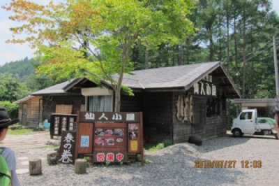
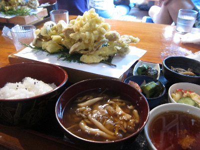
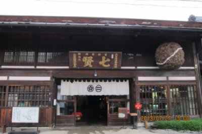
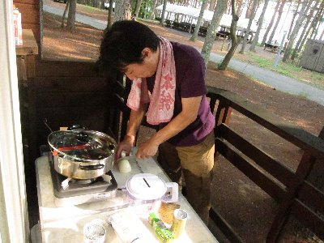
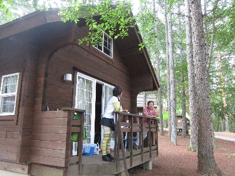
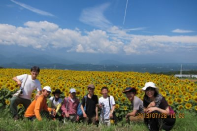
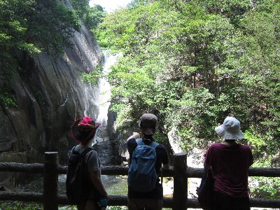
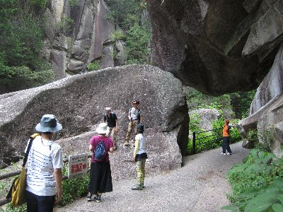

ログキャンプ | 2013年7月 幹事：えい |
|---|---|
| 今年も行こうよキャンプ宴会。 最近なんだかんだで、宴会になってますね。大丈夫かアウトドア。 てな感じですが、今回は山梨でログハウスを借りてキャンプ（宴会）しよう！って事です。 参加者は、いづみ、かむい、Kusa、べっしー、なみへー、Ryuu、sugar、えい の8名。 | |
|  「仙人小屋」で昼食 |  キノコ天ぷら定食 |
| 一日目 お昼に八ヶ岳の仙人小屋で昼食。私はキノコ天ぷら定食を頂きます。 キャンプ場に行く前に、日本酒の酒蔵「七賢」へ寄って、、買い出し後キャンプ場へ。 今回は、山梨県北杜市の「キャンピカ明野ふれあいの里」でログキャビン＆テント」を借りました。 時間が早かったので、ちょっとのんびりして夕食の準備を。 | |
|  日本酒の酒蔵「七賢」 |  台所狭いので外で調理 |
| 今回の夕食は ・トマト＆アスパラのわさび醤油出汁 ・ナスの冷製コンソメ仕立て ・キュウリの冷製スープ ・ナスとシメジのトマトソース冷製パスタ ・オクラとツナの冷製パスタ ・トマト/アボカド/エビの冷製パスタ ・ツナ/オニオン和風冷製パスタ ・鳥胸肉のサルサソース これ、全部作ったんでしたっけ？ あくまで予定メニューだったのですが、どこまで作ったのか（作ったのは主にえいさん）、変更したかは忘れました。 もう、途中からアルコール入ってるしね。 本日も良い気分に・・・・・あれ、キャビン＆テントって事は、テントに寝る人が居るわけで・・・・じゃんけんに負けて、私とRyuuさんがテント組です。(T.T) (笑 | |
 夕食です |  なんせ8人ですから |
|  朝は気持ちが良いよね |  朝食メニュー。朝から凄い |
| 2日目、気持ちの良い高原の朝って感じです。 朝食もガッツリと頂きまして、ヒマワリ畑で写真を撮り、昇仙峡でワイン屋巡りと観光し、さらにシャトレーゼワイン工場に立ち寄り、なんだか町内の旅行みたいですが、呑んで食べての旅行でした。 （あれ、アウトドア活動が無いのでは・・・(笑） | |
|  ヒマワリ畑で | 夏ですから・・ |
 昇仙峡のワインお土産屋にて よく見ると、お土産屋にザック |  ちょっと、呑んでますよ！ 誰が運転するんですか。（俺か・・・） |
|  昇仙峡にて。酔い覚ましだよね |  同じく昇仙峡。すっかり観光客 |
| 写真：えい＆べっしー、コメント：べっしー | |